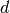
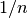
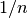
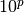
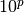
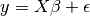

监督学习：从高维观测中预测一个输出变量
监督学习想要解决的问题
监督学习
的核心在于学习两个数据集之间的联系，这两个数据集分别是 观测数据集(X) 和
一个我们想要预测的外部变量(y)
此外部变量通常情况下被称之为 目标值(“target”), 或 类标签(“labels”);
大多数时候，y 是一个n_samples
长度的一维数组.
scikit-learn 中所有的监督学习算法estimators对象都实现了成员方法
fit(X, y) 用于拟合数据模型，
还实现了一个成员方法 predict(X) 用于预测数据集 X
中的未知标签的样本,并返回预测的标签 y.
词汇: 分类 与 回归
如果一个预测任务是在有限的标签集合中分类观测数据或者说是给每个观测对象起名，那么 这样的预测任务就叫分类任务；另一方面，如果我们的目标是根据数据集预测一个连续变化的目标变量 ，那这样的预测任务就叫回归任务。所以在我们的语境中，预测是一个包含了分类与回归的更广泛的语义。
使用 scikit-learn 做分类任务时, y 是一个整型的或字符串型的数组。
注意啦: 你可以在此处 使用 scikit-learn 进行机器学习之导论 快速查看一下机器学习的基本词汇的含义。
最近邻 与 维数灾难
分类鸢尾花:

鸢尾花数据集(iris dataset)是一个分类任务，目标是依据花萼与花瓣的长度和宽度辨识三种不同品种的鸢尾花 (Setosa, Versicolour, 和 Virginica):
>>> import numpy as np
>>> from sklearn import datasets
>>> iris = datasets.load_iris()
>>> iris_X = iris.data
>>> iris_y = iris.target
>>> np.unique(iris_y)
array([0, 1, 2])
KNN 分类器¶
最简单的分类器就是
最近邻分类器(Nearest Neighbor):
给定一个新的观测：X_test, 在训练集合中寻找与该观测最近的那个特征向量。
(关于此分类器详情请看 scikit-learn 文档的 Nearest Neighbors 章节。)
训练集与测试集
当我们做实验研究一个学习算法的时候，请不要用拟合estimator的时候用过的数据去测试它的预测性能 ，这一点非常重要。我们必须用新的数据new data来测试其预测性能，以便知道其泛化性究竟如何. 这就是为什么数据集通常都被划分成训练集和测试集的原因了。
KNN (k nearest neighbors) 分类器例子:
>>> # Split iris data in train and test data
>>> # A random permutation, to split the data randomly
>>> np.random.seed(0)
>>> indices = np.random.permutation(len(iris_X))
>>> iris_X_train = iris_X[indices[:-10]]
>>> iris_y_train = iris_y[indices[:-10]]
>>> iris_X_test = iris_X[indices[-10:]]
>>> iris_y_test = iris_y[indices[-10:]]
>>> # Create and fit a nearest-neighbor classifier
>>> from sklearn.neighbors import KNeighborsClassifier
>>> knn = KNeighborsClassifier()
>>> knn.fit(iris_X_train, iris_y_train)
KNeighborsClassifier(algorithm='auto', leaf_size=30, metric='minkowski',
metric_params=None, n_jobs=1, n_neighbors=5, p=2,
weights='uniform')
>>> knn.predict(iris_X_test)
array([1, 2, 1, 0, 0, 0, 2, 1, 2, 0])
>>> iris_y_test
array([1, 1, 1, 0, 0, 0, 2, 1, 2, 0])
维数灾难¶
For an estimator to be effective, you need the distance between neighboring
points to be less than some value , which depends on the problem.
In one dimension, this requires on average points.
In the context of the above  -NN example, if the data is described by
just one feature with values ranging from 0 to 1 and with training
observations, then new data will be no further away than .
Therefore, the nearest neighbor decision rule will be efficient as soon as
is small compared to the scale of between-class feature variations.
-NN example, if the data is described by
just one feature with values ranging from 0 to 1 and with training
observations, then new data will be no further away than .
Therefore, the nearest neighbor decision rule will be efficient as soon as
is small compared to the scale of between-class feature variations.
If the number of features is  , you now require
points. Let’s say that we require 10 points in one dimension: now 
points are required in dimensions to pave the
, you now require
points. Let’s say that we require 10 points in one dimension: now 
points are required in dimensions to pave the ![[0, 1]](./images/787ef8897f85416cae83d74ef5630a9c5973d996.png) space.
As becomes large, the number of training points required for a good
estimator grows exponentially.
space.
As becomes large, the number of training points required for a good
estimator grows exponentially.
For example, if each point is just a single number (8 bytes), then an
effective -NN estimator in a paltry dimensions would
require more training data than the current estimated size of the entire
internet (±1000 Exabytes or so).
This is called the curse of dimensionality and is a core problem that machine learning addresses.
线性模型: 从回归到稀疏
糖尿病数据集(Diabetes dataset)
糖尿病数据集包含了442个病人的10个生理变量(年龄,性别，体重，血压)数据, 还有一年后疾病发展状况:
>>> diabetes = datasets.load_diabetes()
>>> diabetes_X_train = diabetes.data[:-20]
>>> diabetes_X_test = diabetes.data[-20:]
>>> diabetes_y_train = diabetes.target[:-20]
>>> diabetes_y_test = diabetes.target[-20:]
对于此数据集，我们的任务是根据生理变量指标来预测疾病进展状况。
线性回归
LinearRegression
线性回归的最简单形式是通过调节一个参数集合为数据集拟合一个线性模型,使得其残差平方和尽可能小。
线性模型：
: 数据
: 目标变量
: 系数
- : 观测噪声